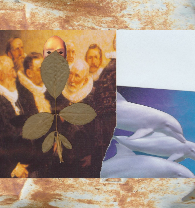

A Quarterly Journal
Jeffrey Woodward, Founder & General Editor
Volume 6, Number 4, December 2012

Gary LeBel
Cumming, Georgia, U.S.A.
Niskaya, Cup
1. Niskaya
The elder set the lamp down before them, igniting it with a wave of his hand. It cast a grainy bluish glow out over the rough-hewn steps on which they stood. Directly beneath them lay a sheer, mile-deep chasm, an enormous tectonic crack in once-boiling magma. Out beyond the lamp’s small circle, the inscrutable darkness was as palpable as stone.
“You make me very proud,” said the elder, “though you break many hearts in doing this. I know that you understand more than any of us that you may never return, that probability leans heavily against it, and yet you are all the more determined. All of us in our own way have come to accept your decision.” Then he looked away into the seamless dark. The lamplight trembled and sputtered faintly. The younger waved her hand over it, rejuvenating its glow.
The elder continued. “This wild chance you are taking carries all our dreams with yours; you’ve given us hope. I know that you have been imagining this ever since your mentors first brought you here, and I have watched your progress with more than a little envy.
“What you find there may be as bleak and empty as the night that shies before this lamp, or it may be filled with unimaginable splendor, revealing another path, a better way: that is my hope, for you and for us, though it saddens me that sleep will touch us all while you are gone.”
The younger, lifting her eyes, replied thoughtfully. “Their star is mild. Their world is bluish, like this light. Think of it! If I remain here, what could I accomplish? When my mentors first showed me a lightsketch of it, everything else faded: I knew then and there that someday I was destined to go. To give my life is nothing for what might be gained. To coddle and protect it is to let it smother and die. They have had time, so much time. Surely their perfect sun has blest them.”
And when the younger finished speaking, a thin red light began to lap over their feet from behind; it gave the stone on which they stood a hazy outline and then a texture, a long flat shelf in the shape of an upturned hand jutting out over the chasm. Standing on the tip of the stone’s longest finger, they turned and watched as the vast, undifferentiated plain behind them brightened tak by tak as if a luminous tide were waxing over its forbidding wastes. In this season, the short season, the turning is swift. Now each could see the other clearly, and neither spoke but gazed upwards as huge Niskaya filled the heavens with the deep red-orange radiance of its slow and beautiful death.
Though they had seen the rising many times before, it took their breaths away each time as if the first. The younger waved her hand over the lamp, extinguishing it. Having closed their eyes intoning “Anapshanat,” they then looked up to see a smaller, green and purplish body rise up out of the west in Niskaya’s wake, its gravity-tethered child.
 Bathed in the spectra of advancing dawn, the elder motioned the younger to stand with him back-to-back and recite the Rounds.
Bathed in the spectra of advancing dawn, the elder motioned the younger to stand with him back-to-back and recite the Rounds.
O turner of days and winds,
the spin of spins that teaches breath
the circular path,
we greet you now, Niskaya,
ksaa-na-heh-hoht-nai
We who whirl
upon an unseen spoke of power
call out to those
whose homes lie worlds apart,
spindrift in a single dark. . .
2. Cup
—There is no cement
in the soul or wind—
Antonio Machado, “Poem about a Day”
(Trans., Willis Barnstone from The Border of Dreams)
A horseshoe crab
lies upended, braised in sun:
etched round it
myriad tracks lead down to the surf
where the might of the sea walked home—
slowly, slowly,
as if a caterpillar were making its way
along the horizon’s edge,
all of summer is slipping away
on a white containership
A ceiling of rose spreads out over us at first light. The sea is the color of rust, and beneath the thin film of bottom silt, you sink down into a depth of clayey mud, soft but firm as a doe’s ear . . .
peace will come
when we all reach down
into the floor of the sea
for a fistful of clay to shape
a wine cup for our enemies
While I’m up to my ankles in mud to buffet the will of the tide, she’s pointing from shore at something the sun-path blinds, and shortly after
it’s then that the touch comes, one only, startling and electric,
blunt and round against my calf with nearly all of its formidable power withheld, the grace of an older knowing, the curious child of a wayward star, and were celestial tribes to swoop down in their graviton ships today, it would not be for us they’d be looking . . .

Author’s Note: Included images:
(1) Gravitational Lens II (2009) montage
(2) The Meeting (c. 1996) collage